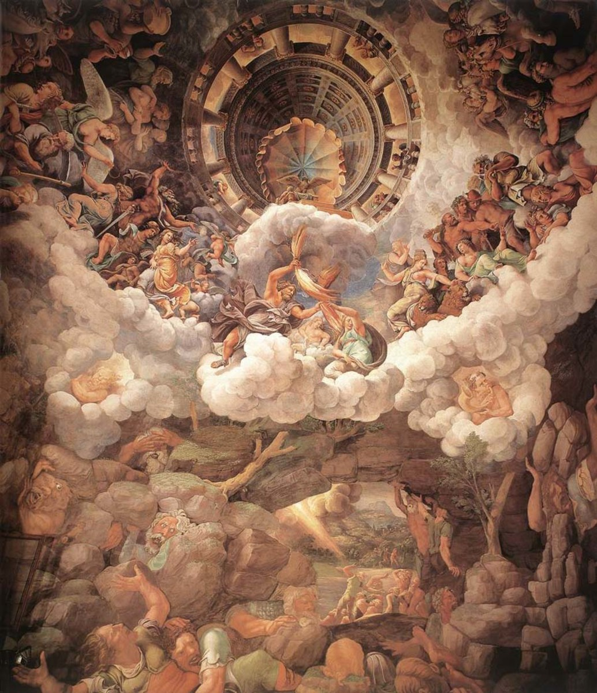
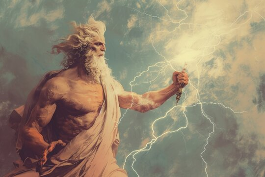
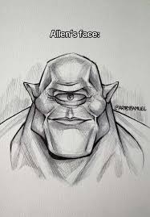

A linha do tempo grega
Criação do Universo
Caos
O universo começou com o Caos, um estado de desordem e vazio. Do Caos surgiram as primeiras entidades, como Gaia (a Terra), Tártaro (o submundo) e Eros (o amor). Gaia deu origem a Urano (o céu) e juntos tiveram os Titãs, os Ciclopes e os Hecatônquiros.

Deuses Primordiais
Os primordiais são entidades que representam os elementos fundamentais do universo na mitologia grega. Gaia simboliza a Terra e é a base de toda a vida; Tártaro representa o abismo profundo e sombrio; Eros é a força que impulsiona a criação e a união entre seres; Nix personifica a noite; e Érebo representa a escuridão. Juntos, eles definem as estruturas básicas do mundo antes do surgimento dos deuses olímpicos.

Os Titãs
Os Titãs são uma antiga geração de deuses da mitologia grega, filhos de Gaia e Urano. Eles representam forças fundamentais da natureza e aspectos do universo, sendo mais ligados a elementos primordiais do que os deuses posteriores. Entre eles estão Cronos, associado ao tempo, Reia, ligada à fertilidade e maternidade, e Oceano, que representa os mares. Os Titãs formam uma das primeiras gerações divinas e ajudam a estruturar o funcionamento do mundo na mitologia.

A Queda de Urano
A queda de Urano ocorre quando Gaia, revoltada com a forma como ele tratava seus filhos, planeja sua derrota. Ela pede ajuda aos Titãs, e Cronos aceita o desafio, atacando Urano e tomando seu lugar no poder, marcando o fim de seu domínio.

Os Filhos de Cronos
Os filhos de Cronos e Reia incluem Héstia (lar), Deméter (agricultura), Hera (casamento), Hades (submundo), Poseidon (mares) e Zeus, associado ao céu e aos trovões. Juntos, eles formam uma das principais gerações de deuses da mitologia grega, cada um com um papel fundamental no funcionamento do mundo.

A Profecia de Gaia
Gaia profetiza que um dos filhos de Cronos irá destroná-lo, assim como ele fez com seu pai Urano. Para evitar isso, Cronos engole seus filhos assim que eles nascem. No entanto, Reia consegue salvar Zeus, escondendo-o e dando a Cronos uma pedra para engolir em seu lugar.

A Titanomaquia
Zeus consegue libertar seus irmãos do domínio de Cronos e reúne todos eles pra enfrentar os Titãs. Com isso começa a Titanomaquia, uma guerra gigantesca que dura anos, envolvendo batalhas intensas e forças colossais dos dois lados. De um lado estão os Titãs, representando as antigas forças do mundo; do outro, Zeus e seus irmãos, trazendo uma nova ordem. Esse conflito marca uma das maiores disputas da mitologia, definindo quem passaria a governar o universo.

A Nova Ordem
Após a vitória, Zeus assume a liderança e, junto com Poseidon e Hades, organiza o universo de forma equilibrada. Zeus passa a governar o céu e a manter a ordem entre deuses e mortais, Poseidon controla os mares e suas forças, e Hades fica responsável pelo submundo e pelas almas. A partir disso, o mundo deixa de ser dominado pelo caos e entra em uma fase estruturada, onde cada deus tem seu papel definido e o funcionamento do universo passa a seguir uma hierarquia clara.

A Era Olímpica
A Humanidade
A criação da humanidade na mitologia grega é frequentemente atribuída ao titã Prometeu, que molda os primeiros seres humanos a partir do barro. Ele não apenas lhes dá forma, mas também se preocupa com seu desenvolvimento, oferecendo o fogo — símbolo de conhecimento, tecnologia e sobrevivência. Esse ato marca o início da relação entre deuses e humanos, colocando a humanidade em um papel central nas histórias que se seguem.

A Interferência dos Deuses
Após o surgimento da humanidade, os deuses passam a influenciar diretamente a vida dos humanos. Eles controlam fenômenos naturais, interferem em decisões e recompensam ou punem comportamentos, estabelecendo uma relação de dependência entre deuses e mortais.

A Caixa de Pandora
Como parte dessa relação, surge Pandora, a primeira mulher. Ao abrir um recipiente proibido, ela acaba liberando diversos males no mundo, explicando a origem do sofrimento humano, mas deixando a esperança como último elemento.
A evolução da Humanidade
Com o tempo, os humanos se desenvolvem e formam sociedades mais organizadas. Mesmo assim, continuam sob a influência dos deuses, que ainda interferem em eventos importantes.
Era dos Heróis
Surgimento dos Heróis
Após o mundo já estar organizado pelos deuses, surgem os heróis — humanos com habilidades extraordinárias, muitas vezes filhos de deuses com mortais. Eles ocupam um lugar entre o divino e o humano.
Aventuras dos Heróis
Os heróis enfrentam provas difíceis, como monstros, criaturas mitológicas e tarefas quase impossíveis. Esses desafios testam sua força, coragem e inteligência.
Monstros e Criaturas
Durante suas aventuras, os heróis enfrentam seres como gigantes, bestas e criaturas sobrenaturais. Entre os mais conhecidos estão Medusa, que transforma em pedra quem olha para ela, o Minotauro, uma criatura metade homem metade touro, e a Hidra de Lerna, um monstro de várias cabeças que se regeneram. Esses seres representam grandes desafios a serem superados pelos heróis.
Conquistas dos Heróis
Os heróis realizam feitos extraordinários, como derrotar monstros, conquistar territórios e realizar tarefas quase impossíveis. Essas conquistas os tornam figuras lendárias e inspiradoras para os humanos.
Conflitos
A Era dos Heróis também é marcada por grandes conflitos entre reinos e povos, muitas vezes influenciados pelos deuses. Essas disputas envolvem batalhas intensas, alianças e rivalidades que moldam o destino de várias regiões. Um dos exemplos mais conhecidos é a Guerra de Troia, um longo conflito que envolve heróis, reis e a intervenção direta dos deuses. Nesses confrontos, não é apenas a força que importa, mas também estratégia, honra e o favor divino, tornando cada guerra um evento decisivo na mitologia.